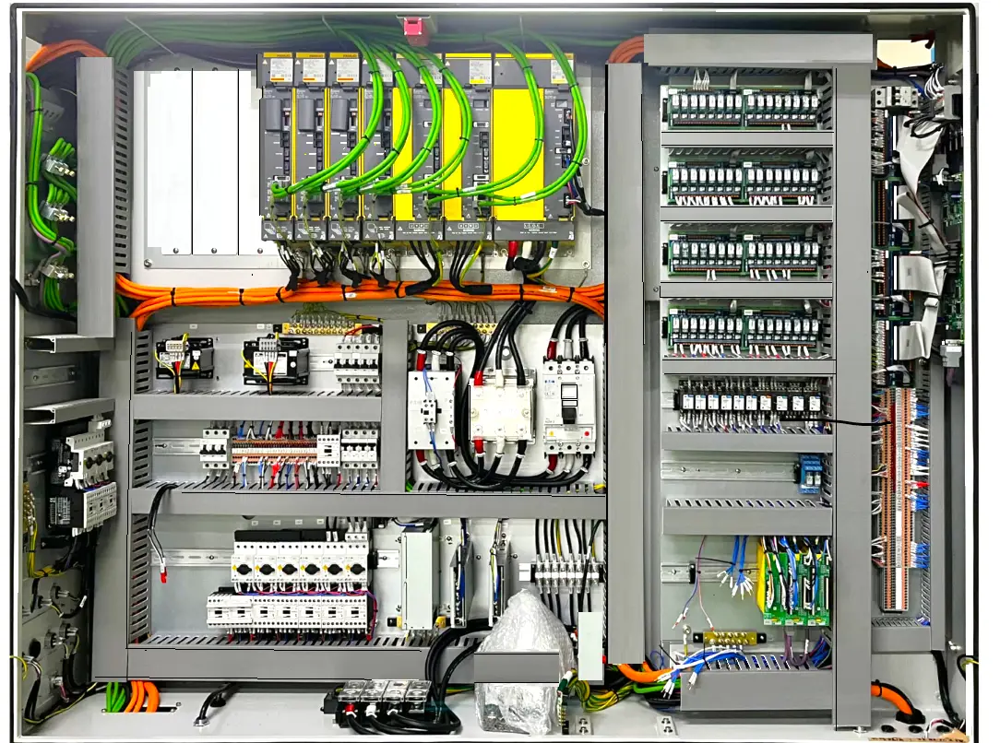
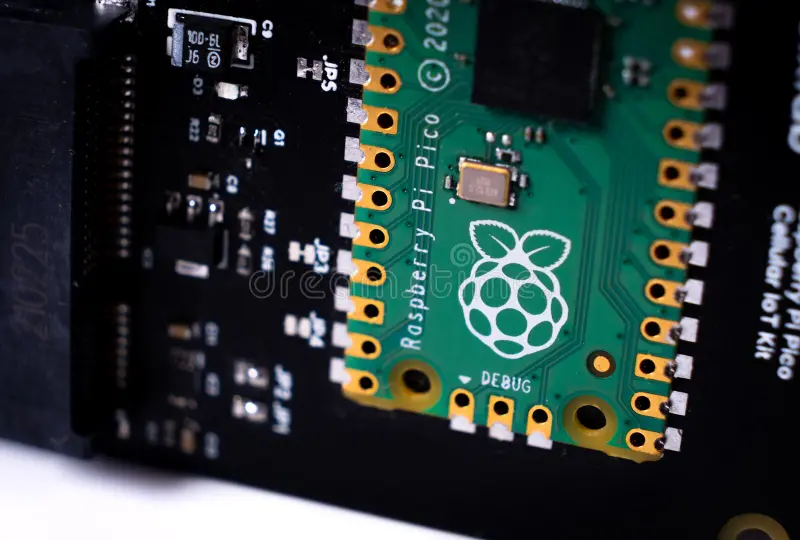

PLC & Automation
Learn about Programmable Logic Controllers, Ladder Logic, and SCADA systems.
Learn More External Reference ↗Your web-based IIoT monitoring and industrial automation learning platform for engineers and students.
Explore HubAutomationHub is a digital platform designed to. bridge the gap between industrial hardware systems and modern web-based monitoring. It serves as a tool and technical resource demonstrating the integration of Programmable Logic Controllers (PLCs) and industrial instrumentation through responsive and accessible web interfaces. Whether you're an engineering student, a professional in the field, or simply curious about industrial automation, AutomationHub provides a hands-on learning experience and real-time monitoring capabilities.

Learn about Programmable Logic Controllers, Ladder Logic, and SCADA systems.
Learn More External Reference ↗Explore field devices including sensors, actuators, and transmitters that connect physical industrial processes to control systems.
Explore on Site ISA Reference ↗
View web-integrated automation projects and real-world demonstrations including predictive maintenance and SCADA dashboard builds.
View Projects GitHub ↗